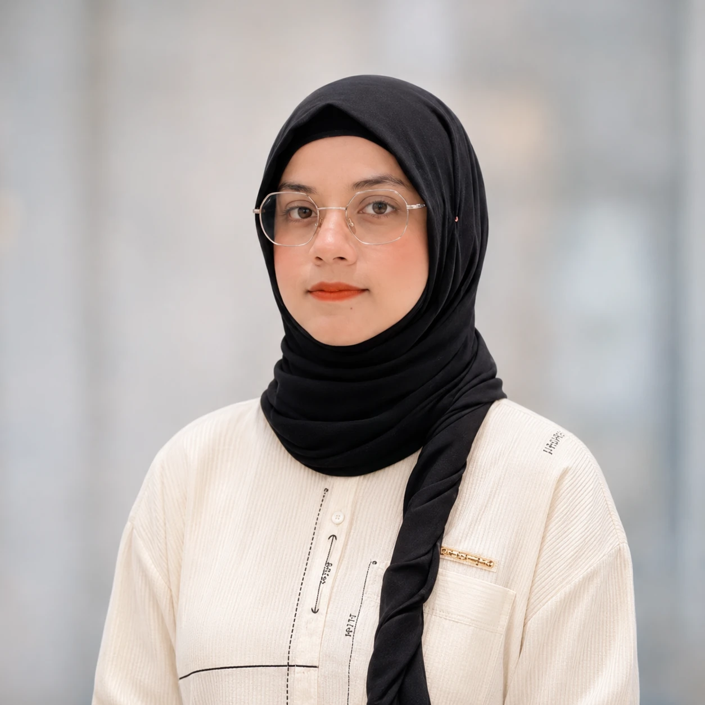

01 / RELIABILITY ↗
Model evaluation & reliability
Understanding prediction errors, evaluating model performance and exploring what makes an AI system dependable.
Hello, I'm
Aspiring AI Researcher / ML Analyst / GenAI & Python Educator
Exploring the questions behind intelligent systems.
Information Technology graduate with hands-on experience in data preparation, model analysis and Python education. Seeking research-oriented Master's opportunities, academic collaboration and a future PhD pathway.

01 / ABOUT
From exploring how computers work to asking how intelligent systems can be made more dependable.
I'm Mah Noor, an Information Technology graduate, Machine Learning Analyst and Python educator developing my interest in AI research.
My early curiosity about computers led me toward programming and eventually machine learning. In analytical work involving dataset annotation, OCR, preprocessing and error analysis, I learned that good predictions depend on more than a model. Data quality, evaluation and careful iteration matter just as much.
Teaching Python and working with peers in technical challenges have strengthened my communication and problem-solving skills. I hope to build on this experience through research-focused Master's study and, in time, doctoral research.
02 / RESEARCH INTERESTS
Developing research interests, not claims of completed publications.
Understanding prediction errors, evaluating model performance and exploring what makes an AI system dependable.
Investigating how annotation quality, incomplete information and preprocessing decisions influence learned patterns.
Building stronger foundations in ML and deep learning through experiments, practical applications and graduate research.
03 / SELECTED WORK
Published examples, learning repositories and collaborative projects.
Sales and profit analysis represented through a Power BI reporting project.
Notebook-based visual exploration and practice with Python plotting libraries.
Browser-testing exercises documenting an interest in software quality and automation.
Published algorithm practice and data-structure exercises.
Hands-on exercises exploring Python and supporting libraries, with versioned practice files.
Public record of workshops, community sessions, and mentoring contributions in technical education.
Mah Noor's Meta-issued certificate confirms advancement to Round 1 after the Practice Round, with Practice Round placement of 1,527th. Her public Python and algorithm-practice repositories offer examples of coding work; a direct link to the specific contest solution has not been identified.
04 / EXPERIENCE & COMMUNITY
Work with data, mentoring and collaborative problem-solving.
Prepared and annotated datasets; worked with OCR, preprocessing, prediction reviews and identifying possible causes of model errors.
Recognized for moderator support in a Python & AI bootcamp. Also listed as a moderator for the October 2025 beginner Python course organized with the University of Sargodha.
Helped students learn Python fundamentals and shared practical guidance on programming, software quality and collaborative learning.
Experience in data-focused work, QA documentation, and communicating with collaborators on data extraction and related tasks.
Completed PakAngels Generative AI Training (June–July 2025) in collaboration with iCodeGuru and Aspire Pakistan; certificate includes a Top Performer seal.
05 / RECOGNITION & ACTIVITIES
Certificates and participation records are clearly distinguished from event posters and project screenshots.
Official recognition for participation in the international team-based puzzle event.
Download proof ↓Team Quantum Quokka. Certificate records rank #369/422 globally and #55/85 in Pakistan.
Download proof ↓Recognition from WPBrigade and iCodeGuru for supporting the September 2025 Python & AI Bootcamp.
Download proof ↓Meta-issued certificate confirms Round 1 qualification; Practice Round placement: 1,527th.
Download certificate ↓Completed PakAngels Generative AI Application Developer training in June–July 2025; certificate includes a Top Performer seal.
Download certificate ↓Accepted as a student for Stanford Code in Place 2026, an introductory Python learning programme.
Download record ↓Listed as a moderator in the beginner Python programme delivered in collaboration with the University of Sargodha.
Download poster ↓Participated with the project API Nexus; the shared showcase describes a team-built AI agent using Next.js, TypeScript, Gemini and React.
Download showcase ↓Competitions are presented as participation or advancement, not as awards or university employment. Every document can be viewed separately.
Explore the verified GitHub projects, training documents, certificates and activity records without opening a long certificate list.
06 / ACADEMIC BACKGROUND
Research motivation grounded in programming, analytical work and a willingness to keep learning.
Government Graduate College Sahiwal
07 / CONNECT
Open to research-focused Master's scholarships, research assistantships, mentoring opportunities and collaborations in machine learning and AI.